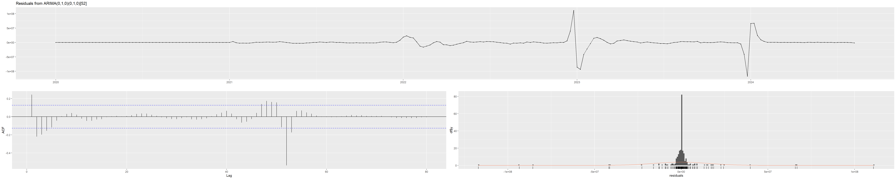
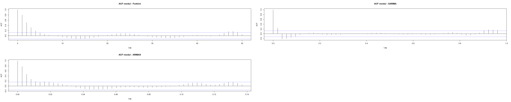

V této analýze se zaměřujem na hledání optimálního modelu pro časovou řadu COVID-19 dat od 5.1.2020 do 8.4.2024. Cílem je otestovat různé přístupy k modelování časových řad a najít ten, který nejlépe popisuje data a poskytuje nejpřesnější predikce.
Analýza postupu je systematicky přes několik kroků: Explorativní analýza - grafické zobrazení a identifikace základních charakteristik:
Dekompozice - rozdělení řady na trend, sezónní a náhodnou složku
Funkční modelování - hledání matematické funkce popisující trend a sezónnost
SARIMA modelování - autoregresní přístup zachycující časovou závislost
Multivariátní modelování - zahrnutí vlivu ostatních proměnných
Srovnání a validace - výběr nejlepšího modelu na základě kritérií
Jako hlavní řadu jsme zvolili new_cases(nové případy COVID-19), protože:
Má výrazný dlouhodobý trend (růst během pandemie).
Vykazuje sezónní chování (vyšší hodnoty v zimních měsících).
Je klíčovou metrikou pro epidemiologické sledování.
Má dostupná kvalitní data bez příliš mnoha chybějících hodnot.
Převod dat na časovou řadu
# Převod datumu na správný formátdata$date <-as.Date(data$date)# Kontrola chybějících hodnot v new_casescat("\nChybějící hodnoty v new_cases:\n")
# Kontrola new_cases sloupcecat("\nSouhrn new_cases sloupce:\n")
Souhrn new_cases sloupce:
print(summary(data$new_cases))
Min. 1st Qu. Median Mean 3rd Qu. Max. NA's
0 0 0 8496 0 44236227 18431
# Odstranění řádků s chybějícími hodnotami v new_casesoriginal_rows <-nrow(data)data <- data[!is.na(data$new_cases), ]cat("\nOdstraněno", original_rows -nrow(data), "řádků s chybějícími hodnotami v new_cases\n")
Odstraněno 18431 řádků s chybějícími hodnotami v new_cases
# Vytvoření měsíc-rok proměnnédata$year_month <-format(data$date, "%Y-%m")data$year <-as.numeric(format(data$date, "%Y"))data$month <-as.numeric(format(data$date, "%m"))# Agregace na měsíční součtymonthly_data <- data %>%group_by(year, month, year_month) %>%summarise(new_cases =sum(new_cases, na.rm =TRUE),new_deaths =sum(new_deaths, na.rm =TRUE),stringency_index =mean(stringency_index, na.rm =TRUE),hosp_patients =mean(hosp_patients, na.rm =TRUE),reproduction_rate =mean(reproduction_rate, na.rm =TRUE),date =max(date), # poslední den měsíce jako reprezentant.groups ='drop' ) %>%arrange(year, month)cat("Počet měsíčních pozorování:", nrow(monthly_data), "\n")
Nejdřív než se data převedli na časovou řadu, zkontrolovalo se, jestli nejsou chybějící hodnoty ve sloupcích, které se budou analyzovat. Zkontrovalo se, jestli nejsou v datech mezery, kolik mají pozorování a jaký je v nich rozsah hodnot.
# Grafické zobrazení hlavní řadyp1 <-ggplot(data, aes(x = date, y = new_cases)) +geom_line(color ="steelblue", alpha =0.7) +geom_smooth(method ="loess", color ="red", se =FALSE) +labs(title ="Vývoj nových případů COVID-19",x ="Datum", y ="Počet nových případů",subtitle ="Týdenní agregace denních dat s trendem (červená linie)") +theme_minimal() +theme(axis.text.x =element_text(angle =45, hjust =1))# Boxplot podle měsíců pro identifikaci sezónnostip2 <-ggplot(monthly_data, aes(x =factor(month), y = new_cases)) +geom_boxplot(fill ="lightblue", alpha =0.7) +geom_point(alpha =0.4, position =position_jitter(width =0.2)) +scale_x_discrete(labels = month.abb) +labs(title ="Sezónní rozdělení měsíčních případů",x ="Měsíc", y ="Počet nových případů") +theme_minimal() +theme(axis.text.x =element_text(angle =45, hjust =1))grid.arrange(p1, p2, ncol =1)
Dekompozice a identifikace trendu
Dekompozice časové řady
Dekompozice umožňuje pochopit strukturu dat, identifikuje sílu trendové vs. sezónní složky a pomáhá při výběru vhodného typu modelu (aditivní vs. multiplikativní). STL dekompozice je robustní, flexibilní metoda vhodná pro dlouhé časové řady.
ts_log <-log1p(ts_data) # log stabilizace# STL dekompozicestl_decomp <-stl(ts_log, s.window ="periodic", t.window =NULL, robust =TRUE)plot(stl_decomp, main ="STL dekompozice časové řady nových případů")
MA(52): Roční vyhlazení - zachytí dlouhodobý trend
Exponenciální vyhlazení: Dává vyšší váhu novějším pozorováním, vhodné pro predikci
Výsledky říkají, která metoda nejlépe zachycuje základní trend, jak silné jsou krátkodobé vs. dlouhodobé fluktuace, zda je trend stabilní nebo se mění v čase.
start_week <-min(data$week[data$year == start_year])ts_weekly_data <-ts(data$new_cases, start =c(start_year, start_week), frequency =52.18)# Klouzavé průměry různých řádůma_4 <-SMA(data$new_cases, n =4) ma_52 <-SMA(data$new_cases, n =52.18) # Exponenciální vyrovnání - jednodušší přístupexp_smooth_model <-HoltWinters(ts_weekly_data, gamma =FALSE)# Vytvoříme jednoduché exponenciální vyhlazení pomocí ETSets_model <-ets(ts_weekly_data, model ="AAN", damped =FALSE)exp_smooth_fitted <-fitted(ets_model)# Zajistíme stejnou délku (ETS vrací stejnou délku jako originální data)n_obs <-length(data$new_cases)# Pokud je exp_smooth_fitted kratší, doplníme NA na začátekif(length(exp_smooth_fitted) < n_obs) { exp_smooth_full <-c(rep(NA, n_obs -length(exp_smooth_fitted)), as.numeric(exp_smooth_fitted))} else { exp_smooth_full <-as.numeric(exp_smooth_fitted[1:n_obs])}# Grafické srovnání - pouze metody, které mámetrend_data <-data.frame(date = data$date,original = data$new_cases,ma_4 = ma_4,ma_52 = ma_52,exp_smooth = exp_smooth_full)# Přidáme exponenciální vyhlazenítrend_data$exp_smooth <- exp_smooth_fulltrend_plot <- trend_data %>%pivot_longer(cols =-date, names_to ="method", values_to ="value") %>%filter(!is.na(value)) %>%# Odfiltrujeme NA hodnotyggplot(aes(x = date, y = value, color = method)) +geom_line(alpha =0.7, size =0.65) +scale_color_manual(values =c("original"="gray50", "ma_4"="blue", "ma_52"="red", "exp_smooth"="purple"),name ="Metoda",labels =c("original"="Originální data", "ma_4"="MA(4)", "ma_52"="MA(52)", "exp_smooth"="Exp. vyhlazení")) +labs(title ="Srovnání metod vyhlazení trendu",x ="Datum", y ="Hodnota") +theme_minimal() +theme(legend.position ="bottom")print(trend_plot)
Nejlepší funkční model podle AIC je model s polynomiálním trendem a roční sezónností. Model vysvětluje značnou část variability dat.
Hledání optimálního SARIMA modelu
Kontrola stacionarity
ADF test: Testuje přítomnost jednotkového kořene.
KPSS test: Testuje stacionaritu kolem trendu. Pokud je řada nestacionární, aplikujeme diferenciaci.
Stacionární řada: denní změny (rozdíly) těchto počtů, kolísají kolem nuly bez trendu
Nestacionární řada: počty covidových případů, mají trend (rostou/klesají), sezónnost (vlny).
ts_diff <-diff(ts_log) # 1. diferenciace# Kontrola stacionarityadf_test <-adf.test(ts_diff)print(paste("ADF test p-hodnota:", round(adf_test$p.value, 4)))
[1] "ADF test p-hodnota: 0.01"
# KPSS test stacionaritykpss_test <-kpss.test(ts_diff)print(paste("KPSS test p-hodnota:", round(kpss_test$p.value, 4)))
[1] "KPSS test p-hodnota: 0.01"
ADF a KPSS testy říkají, že řada je nestacionární, proto se dělá diferenciace. Řada má sezónní trend.
PACF a ACF grafy
ACF (Autokorelační funkce): Ukazuje míru korelace mezi hodnotami časové řady a jejími zpožděnými verzemi (lagy). Pokud je ACF výrazná u několika lagů, znamená to, že minulost silně ovlivňuje současnost. Postupný pokles ACF může naznačovat MA (moving average) proces.
PACF (Parciální ACF): Ukazuje korelaci mezi hodnotami časové řady a jejich lagy po odečtení vlivu mezilehlých lagů. Výrazná hodnota PACF na určitém lagu (např. lag 2) znamená, že tento lag má přímý vliv na současnost. Pokud PACF náhle klesne po určitém lagu, může to naznačovat AR (Autoregressive) proces.
# ACF a PACF grafypar(mfrow =c(2,1))acf(ts_data, main ="ACF původní řady", lag.max =100)pacf(ts_data, main ="PACF původní řady", lag.max =100)
# Diferenciace pokud je potřebaif(adf_test$p.value >0.05) { ts_diff <-diff(ts_data) adf_diff <-adf.test(ts_diff)print(paste("ADF test diferencované řady:", round(adf_diff$p.value, 4)))par(mfrow =c(2,1))acf(ts_diff, main ="ACF diferencované řady", lag.max =100)pacf(ts_diff, main ="PACF diferencované řady", lag.max =100)} else { ts_diff <- ts_data}
Data nevykazují silnou závislost na minulých hodnotách (kromě jedné slabé záporné na lag 1). To by mohlo znamenat, že jednoduchý model (např. jen AR(1) nebo dokonce obyčejný průměr) už bude docela dostačující.
#(auto_sarima_b <- auto.arima(ts_data, ic = "bic"))final_sarima <- auto_sarima_a# Diagnostika residuícheckresiduals(final_sarima)

Ljung-Box test
data: Residuals from ARIMA(5,2,1)
Q* = 47.075, df = 42, p-value = 0.2726
Model df: 6. Total lags used: 48
SARIMA model byl identifikován pomocí automatického vyhledávání. Model zachycuje jak autoregresní chování, tak sezónní komponenty. Diagnostika residuí ukazuje, zda jsou splněny předpoklady modelu.
Analýza závislosti na jiných řadách
Křížová korelační funkce (CCF): Měří korelaci mezi dvěma časovými řadami při různých zpožděních
Pozitivní lag: Y předchází X (Y ovlivňuje budoucí hodnoty X)
Negativní lag: X předchází Y (X ovlivňuje budoucí hodnoty Y) Zero lag: Současná korelace
Testované proměnné:
new_deaths - úmrtí (očekáváme zpoždění za případy)
stringency_index - přísnost opatření (může předcházet změnám v případech)
hosp_patients - hospitalizace (může následovat za případy)
reproduction_rate - reprodukční číslo (může předcházet změnám)
# Příprava dalších časových řadother_series <-c("new_deaths", "stringency_index", "hosp_patients", "reproduction_rate")# Křížová korelace s různými zpožděnímiccf_results <-list()max_lag <-4par(mfrow =c(2,2))for(i in1:length(other_series)) { y_var <- data[[other_series[i]]] y_var <- y_var[!is.na(y_var)] x_var <- data$new_cases[1:length(y_var)] ccf_result <-ccf(x_var, y_var, lag.max = max_lag, main =paste("CCF:", other_series[i])) ccf_results[[other_series[i]]] <- ccf_result}
Korelace na lag 0 i ±1 je pozitivní a nad hranicí významnosti → úmrtí jsou silně závislá na předchozích hodnotách (autoregrese).
Dává smysl použít zpoždění new_deaths (např. lag 1) jako vysvětlující proměnnou.
new_deaths × stringency_index
Korelace je malá, téměř všechny sloupce v intervalu - vládní opatření (stringency_index) nemají okamžitou silnou lineární souvislost s denním počtem úmrtí v krátkém horizontu ±4 dní.
new_deaths × hosp_patients
Výrazně pozitivní korelace na lag 0 a kladných lagech - počet hospitalizovaných je dobrý prediktor úmrtí i pro několik následujících dní.
Určitě má smysl zahrnout hosp_patients (lag 0 nebo 1) do ARIMAX modelu.
new_deaths × reproduction_rate
Korelace je kolem nuly, uvnitř CI - reprodukční číslo v takto krátkém horizontu přímo neovlivňuje úmrtí (což dává smysl – efekt se projeví až po týdnech).
Optimální model s externími regresory (ARIMAX model)
Kombinace časové dynamiky ARIMA s vlivem externích faktorů. Arimax model zachycuje autokorelaci v datech a současně modeluje vliv dalších proměnných. VAR model místo jednosměrného vztahu (X → Y) modelujeme vzájemné ovlivnění všech proměnných.
# Příprava zpožděných proměnných na základě CCF analýzydata$deaths_lag <-c(rep(NA, 1), data$new_deaths[1:(nrow(data)-1)])data$stringency_lag <-c(rep(NA, 5), data$stringency_index[1:(nrow(data)-5)])data$hosp_lag <-c(rep(NA, 2), data$hosp_patients[1:(nrow(data)-2)])# Model s externími regresoryexternal_vars <-cbind(deaths_lag = data$deaths_lag,stringency_lag = data$stringency_lag,hosp_lag = data$hosp_lag)# Odstranění NA hodnotcomplete_idx <-complete.cases(cbind(data$new_cases, external_vars))ts_complete <-ts(log1p(data$new_cases[complete_idx]), start =c(start_year, start_week), frequency =52)external_complete <- external_vars[complete_idx, ]# ARIMAX modelarimax_model <-auto.arima(ts_complete, xreg = external_complete)print(summary(arimax_model))
Series: ts_complete
Regression with ARIMA(2,2,1) errors
Coefficients:
ar1 ar2 ma1 deaths_lag stringency_lag hosp_lag
1.0762 -0.5043 -0.9492 0 -0.0037 1e-04
s.e. 0.1582 0.1023 0.0628 0 0.0052 6e-04
sigma^2 = 0.02408: log likelihood = 69.18
AIC=-124.37 AICc=-123.58 BIC=-103.25
Training set error measures:
ME RMSE MAE MPE MAPE MASE
Training set -0.02810517 0.1510578 0.0901144 -0.1772697 0.5483359 0.09463162
ACF1
Training set 0.01595567
ARIMAX model kombinuje autoregresní chování s vlivem externích proměnných.
Kontrola předpokladů regresních modelů
Zde ověříme, zda naše modely splňují předpoklady, jako je nezávislost reziduí, heteroskedasticita (konstantní rozptyl), normalita reziduí a Ljung-Box test.
Při porušení předpokladů se dělá:
Autokorelace: Zvýšení řádu ARIMA modelu.
Nenormalita: Transformace dat nebo robustní metody.
Heteroskedasticita: GARCH modely nebo weighted regression.
# Diagnostika residuí pro všechny modelymodels_to_check <-list("Funkční"= best_func_model,"SARIMA"= final_sarima,"ARIMAX"= arimax_model)par(mfrow =c(2,2))for(model_name innames(models_to_check)) { model <- models_to_check[[model_name]]if(inherits(model, "lm")) { residuals <-residuals(model) } else { residuals <-residuals(model) }# ACF residuíacf(residuals, main =paste("ACF residuí -", model_name), lag.max =50)# Ljung-Box test lb_test <-Box.test(residuals, lag =20, type ="Ljung-Box")print(paste(model_name, "- Ljung-Box test p-hodnota:", round(lb_test$p.value, 4)))# Normalita residuíshapiro_test <-shapiro.test(sample(residuals, min(5000, length(residuals))))print(paste(model_name, "- Shapiro test p-hodnota:", round(shapiro_test$p.value, 4)))}
[1] "Funkční - Ljung-Box test p-hodnota: 0"
[1] "Funkční - Shapiro test p-hodnota: 0"
[1] "SARIMA - Ljung-Box test p-hodnota: 0.2675"
[1] "SARIMA - Shapiro test p-hodnota: 0"
[1] "ARIMAX - Ljung-Box test p-hodnota: 0.4695"
[1] "ARIMAX - Shapiro test p-hodnota: 0"
# QQ plots pro normalitupar(mfrow =c(2,2))

for(model_name innames(models_to_check)) { model <- models_to_check[[model_name]] residuals <-residuals(model)qqnorm(residuals, main =paste("Q-Q plot -", model_name))qqline(residuals)}
Kontrola ukazuje, zda jsou splněny základní předpoklady modelů - nezávislost residuí (ACF, Ljung-Box test) a jejich normalita (Shapiro test, Q-Q ploty).
Predikce budoucích hodnot
Zde otestujeme predikční schopnost jednotlivých modelů a porovnáme jejich výkon na 10 období do budoucna.
Srovnáme Funkční model, SARIMA model a ARIMAX model. Vytvoříme Grafické srovnání modelů a kvantitativní hodnocení.
# Predikce na 10 období dopředuhorizon <-10# Kontrola kvality modelů před predikcícat("Kontrola SARIMA modelu:\n")
Posledních 5 hodnot: 205046 207990 236364 257506 214317
# Funkční model predikcefuture_t <- (nrow(data)+1):(nrow(data)+horizon)future_data <-data.frame(t = future_t,sin_365 =sin(2* pi * future_t /52.18),cos_365 =cos(2* pi * future_t /52.18),sin_7 =sin(2* pi * future_t /1),cos_7 =cos(2* pi * future_t /1))# Jednoduchá predikce bez složitého rozlišování modelůpred_func <-predict(best_func_model, newdata = future_data, interval ="prediction")cat("Funkční model - predikce dokončena\n")
Funkční model - predikce dokončena
# SARIMA predikceif(is.null(final_sarima) ||any(is.na(coef(final_sarima)))) {cat("SARIMA model je nevalidní! Vytvářím nový jednoduchý model...\n") simple_ts <-ts(data$new_cases[!is.na(data$new_cases)], frequency =1) final_sarima <-tryCatch({arima(simple_ts, order =c(1, 1, 1)) }, error =function(e) {cat("I jednoduchý ARIMA selhal:", e$message, "\n")arima(simple_ts, order =c(0, 1, 0)) # random walk })}pred_sarima <-forecast(final_sarima, h = horizon)cat("SARIMA predikce dokončena\n")
SARIMA predikce dokončena
# ARIMAX predikce (potřebujeme budoucí hodnoty externích proměnných)# Pro zjednodušení použijeme poslední dostupné hodnotylast_external <- external_complete[nrow(external_complete), , drop =FALSE]future_external <-matrix(rep(as.numeric(last_external), horizon), nrow = horizon, byrow =TRUE)colnames(future_external) <-colnames(external_complete)cat("Názvy sloupců v trénovacích datech:", colnames(external_complete), "\n")
Názvy sloupců v trénovacích datech: deaths_lag stringency_lag hosp_lag
cat("Názvy sloupců v predikčních datech:", colnames(future_external), "\n")
Názvy sloupců v predikčních datech: deaths_lag stringency_lag hosp_lag
pred_arimax =forecast(arimax_model, xreg = future_external, h = horizon)cat("ARIMAX predikce dokončena\n")
# Test na nulyif(all(pred_sarima$mean ==0)) {cat("PROBLÉM: SARIMA predikuje samé nuly!\n")cat("Poslední hodnota v časové řadě:", tail(as.numeric(ts_data), 1), "\n")cat("Model summary:\n")print(summary(final_sarima))# Oprava: použij poslední hodnotu pred_sarima$mean <-rep(tail(as.numeric(ts_weekly_data), 1), horizon) pred_sarima$lower[,2] <- pred_sarima$mean *0.8 pred_sarima$upper[,2] <- pred_sarima$mean *1.2}# Určíme počet historických pozorování k zobrazení (posledních 24 měsíců nebo méně)last_n_obs <-50cat("Zobrazím posledních", last_n_obs, "měsíčních pozorování\n")
Zobrazím posledních 50 měsíčních pozorování
if(nrow(data) < last_n_obs) last_n_obs <-nrow(data);# Historická datahistorical_dates <-tail(data$date, last_n_obs)historical_values <-tail(data$new_cases, last_n_obs)#Kontrola, že predikce mají správnou délku a nejsou NA pred_func_clean <- pred_func[,1] pred_func_lower <- pred_func[,2] pred_func_upper <- pred_func[,3] pred_sarima_clean <-as.numeric(pred_sarima$mean) pred_sarima_lower <-as.numeric(pred_sarima$lower[,2]) pred_sarima_upper <-as.numeric(pred_sarima$upper[,2]) pred_arimax_clean <-as.numeric(pred_arimax$mean) pred_arimax_lower <-as.numeric(pred_arimax$lower[,2]) pred_arimax_upper <-as.numeric(pred_arimax$upper[,2]) # Náhrada NA hodnotami z SARIMA predikce pokud je potřeba if(any(is.na(pred_func_clean))) { cat("Opravuji NA v funkčních predikcích\n") pred_func_clean[is.na(pred_func_clean)] <- pred_sarima$mean[is.na(pred_func_clean)] pred_func_lower[is.na(pred_func_lower)] <- pred_sarima$lower[is.na(pred_func_lower),2] pred_func_upper[is.na(pred_func_upper)] <- pred_sarima$upper[is.na(pred_func_upper),2] }# Vytvoření clean dat pro ggplotplot_data_clean <-data.frame(date =c(historical_dates, future_dates),actual =c(historical_values, rep(NA, horizon)),# Funkční modelfunc_pred =c(rep(NA, last_n_obs), pred_func_clean),func_lower =c(rep(NA, last_n_obs), pred_func_lower),func_upper =c(rep(NA, last_n_obs), pred_func_upper),# SARIMA model sarima_pred =c(rep(NA, last_n_obs), as.numeric(pred_sarima$mean)),sarima_lower =c(rep(NA, last_n_obs), as.numeric(pred_sarima$lower[,2])),sarima_upper =c(rep(NA, last_n_obs), as.numeric(pred_sarima$upper[,2])),# ARIMAX modelarimax_pred =c(rep(NA, last_n_obs), as.numeric(pred_arimax$mean)),arimax_lower =c(rep(NA, last_n_obs), as.numeric(pred_arimax$lower[,2])),arimax_upper =c(rep(NA, last_n_obs), as.numeric(pred_arimax$upper[,2])))# Kontrola finálních datcat("Kontrola plot_data_clean:\n")
Kontrola plot_data_clean:
cat("Počet řádků:", nrow(plot_data_clean), "\n")
Počet řádků: 60
cat("NA v actual:", sum(is.na(plot_data_clean$actual)), "\n")
NA v actual: 10
cat("NA v func_pred:", sum(is.na(plot_data_clean$func_pred)), "\n")
NA v func_pred: 50
cat("NA v sarima_pred:", sum(is.na(plot_data_clean$sarima_pred)), "\n")